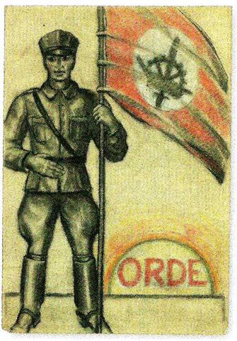

> nieuwsbrief > 24e jg. - nr. 2/2020
Inhoud

Mededelingen: hernieuwen bijdrage 2020 – Antiquariaat – Inhoud Jaarboek 2020
Hernieuwen
ledenbijdrage voor 2020
De
jaarwisseling is ondertussen voorbij. We danken de vele leden
die sindsdien spontaan hun ledenbijdrage vereffenden. Wie dit
tot nog toe naliet vindt bij dit nummer andermaal eren
betaalformulier. Nagaan of u wel dan niet betaald hebt leest u
af op het adresetiket van dit nummer. Indien u boven uw naam
een *-symbool vindt, dan is alles in orde. Ontbreekt dit *-symbool, dan wijst dit er op dat we
uw bijdrage nog
niet mochten
boeken.
De
minimumbijdrage bleef behouden op 29 €. In ruil daarvoor
verzekeren we u de stipte toezending van het nieuwe Jaarboek Jaarboek Joris
van Severen – het 24e al – in de meimaand en van de
vier nummers van ons kwartaalblad Nieuwsbrief Joris van
Severen. Vanaf het bedrag van 35 € boeken we u met dank
als steunend lid. Vereffening graag via onze rekening IBAN:
BE71 0001 7058 1469 – BIC: BPOTBEB1 t.n.v.
Studiecentrum Joris van Severen, Paddevijverstraat 2, 8900
Ieper.
Antiquariaatsaanbod: Onderstaand boekenpakket wordt te koop
aangeboden voor de globale prijs van 60 €. Geïnteresseerden
kunnen daartoe contact opnemen met Mevr. Mia Claessen te
Turnhout via het telefoonnummer 0472 789 050.
- Zoo sprak de
Leider – bundel toespraken van Joris van Severen.
- Verdinaso-programmaboekje.
- De
maatschappijleer van het Verdinaso.
Van Louis Gueuning:
- Handhaaf en
bouw nr. 2 van 1962.
- Positions
et
propositions nr 9 van 1967.
- Liber
amicorum Louis Gueuning 70 van 1968: 200 exemplaren
werden genummerd, dit is nr. 14 en gesigneerd.
- Louis
Gueuning: Petit Testament d’un éducateur 1971.
- Louis
Gueuning: Joris van Severen écrits et discours, delen
I - II - III – IV, gesigneerd.
- Louis
Gueuning: Oeuvres poétiques 1970, gesigneerd.
Inhoud Jaarboek 24 ‘(2020) Joris
van Severen
Enkele krachtlijnen in het denken van
Joris van Severen
Maurits Cailliau
Het Nationaal Verbond ‘GGG’ (Noordelijke
Nederlanden) en het Verdinaso (Zuidelijke Nederlanden – Een
vergelijking
Henk Tijssen
Hans de Goeij. Studentenleider,
katholiek revolutionair en Dinaso
Ruud Bruijns
Joris van Severen in de ogen van ‘The
Catholic Herald’
Ruud Bruijns
Joris van Severen en Pierre Nohomb
Ruud Bruijns
De briefwisseling tussen Joris van
Severen en Ward Hermans
Gui van Gorp
en Maurits Cailliau
Op zoek naar de wortels van de Joris van
Severen Orde
Jef Werkers
Verhaal gedaan door Jules de Cock,
nopens zijn aanhouding, de moordpartij van Abbeville, enz.
Jules de Cock
Gedicht: Vlaanderen – In Memoriam Joris
van Severen
Fernand Florizoone
Herdenkingen 2020 –
80
jaar
later
zaterdag
16 mei 2020
jaarmis
te brugge
&
ZONDAG
17 MEI 2020
GROET
aAN HET GRAF
TE ABBEVILLE
programma
Jaarmis in de Blindekenskapel
kreupelenstraat te brugge
Zaterdag
16
mei: 10.15 uur: Plechtige
Gregoriaans gezongen H. Mis met homilie, geconcelebreerd door
de E.H. Jan Tilleman en opgeluisterd door het parochiekoor
Kristus Koning, ter nagedachtenis van Joris van Severen, zijn
lotgenoten en al onze overledenen in de Blindekenskapel, De Blindekenskapel te
Brugge herinnert aan de Slag op de Pevelenberg anno 1304
in de Franse Nederlanden, waaraan de Brugse stedelijke milities
deelnamen. De kapel is gelegen in de Kreupelenstraat, een
zijstraat van de Smedenstraat.
In de Kreupelenstraat is er geen
parkeergelegenheid. Parkeren kan o.m. in de ondergrondse parking
op ’t Zand, die zich op wandelafstand van de kapel bevindt.
Aansluitend volgt de Herdenking aan het Bourgoensche
Cruyce
Zaterdag 16 mei: 11.30
uur: aan
de toegangspoort tot het Bourgoensche Cruyce, het voormalige
woonhuis van Joris van Severen in de Wollestraat te Brugge
memoreert een gedenkplaat de namen van de vier Brugse
slachtoffers van het Bloedbad
van Abbeville. Sinds enkele jaren wordt daar door het
Brugse Abbeville Comité
jaarlijks een korte herdenkingsplechtigheid gehouden met
volgend stramien: welkomstwoord, In Memoriam voor de vier
Bruggelingen, bloemenhulde, toespraak namens het Brugse
stadsbestuur, afscheidswoord, het Gebed voor het Vaderland.
De
afsluitende receptie
heeft voortaan plaats onmiddellijk na het einde van deze
plechtigheid aan het hotel Erasmus in de Wollestraat.
Groet aan het graf te Abbeville
Zondag
17 mei:
afspraak om 11.30 uur
aan de toegang tot het kerkhof te Abbeville. Aansluitend
gezamenlijk bezoek aan het graf van Joris van Severen en
Steun en info
Wenst
u op de hoogte gehouden te worden van de activiteiten van de Stichting
Joris van Severen vzw, dan kunt u zich wenden
tot de voorzitter
Steun
in het bijzonder voor
de bloemstukken op het graf te Abbeville en voor
de door de Stichting ontplooide initiatieven kunt U overmaken
op het rekeningnummer van de Stichting Joris van Severen: IBAN: BE29
4650 2267 2164 BIC: KREDBEBB, Izegem.
Voor
het bezoek aan het graf te Abbeville op zondag 19 mei maken we
gebruik van de ‘samen rijden’-formule op kosten-delende basis.
Dit initiatief wordt gecoördineerd door Paul Seynaeve – tel.
0495-290318 - tot uiterlijk 15 mei. Na deze datum kunnen in
deze geen bindende afspraken meer gemaakt worden.
De Stichting
Joris van Severen vzw, opgericht in 1992, heeft als statutaire
opdracht “de persoon en het werk van Joris van Severen in ere
houden en ze aan anderen leren kennen en waarderen. Daartoe
organiseert de vereniging naast godsdienstige ook andere
herdenkingen, spreekbeurten, publicaties, studies of enige
andere activiteit. Tot dit doel onderneemt zij allerhande
initiatieven die rechtstreeks of onrechtstreeks tot de
verwezenlijking van dit doel kunnen bijdragen. Zij mag daartoe
alle noodzakelijke roerende of onroerende goederen bezitten of
verwerven.” De Stichting stelt iedereen
in de gelegenheid daadwerkelijk aan de verwezenlijking van
haar initiatieven mee te werken.
De Stichting Joris van
Severen nam in 2007 in onderlinge verstandhouding de
taken over van de vzw Abbeville (opgericht in 1996 en
ontbonden in 2007) waarvan de actieve leden toetraden tot de Stichting
Joris van Severen vzw. Op die wijze werden de krachten
gebundeld en blijvend tot synthese gebracht.
De
doelstellingen van de voormalige vzw Abbeville,
namelijk: het monument te
Abbeville blijvend vrijwaren, in stand houden, en
jaarlijks een bezoek aan het graf organiseren, zo dicht
mogelijk bij 20 mei behoren sindsdien tot het
takenpakket van de Stichting Joris van Severen.
Als
voorheen blijft de Stichting
Joris van Severen vzw zich uitdrukkelijk onafhankelijk
van alle partijpolitiek opstellen.
Namens
de Stichting Joris van
Severen:
Programma onder voorbehoud van
eventuele afgelasting
ten
gevolge van de dan geldende Corona-maatregelen
in het laatste jaar
van mijn humaniora
de retorica 44-45
van het onze-lieve-vrouwecollege
waren we met drie
die tegelijk
én bij het geheime
Verdinaso waren
én jezuïet wilden
worden
hoe die twee
roepingen al dan niet konden samengaan
zou op die
bijblijvende dag blijken
in het beukenbos
van Huldenberg
in het kasteel
aldaar verbleef
sinds de moord op
van Severen
diens opvolger
graaf van Limburg struma
ik had die man van
heel den oorlog
nog niet ontmoet
tot op een dag
onze scoutsmaster
Hendrickx
die tegelijk onze
verdinasoleider was
de uitnodiging
kreeg om met ons drieën
naar zijn kasteel
in Huldenberg te komen
na meer dan
zeventig jaar weet ik echt niet meer
hoeveel strofen het
Wilhelmus telt
toch moesten wij na
aankomst
ze in strak gelid
tot de laatste toe
staan zingen
bij het verschijnen
van de graaf
vergis ik mij als
ik mij herinner
dat zelfs de beuken
daarbij in strakke houding stonden?
tevoren bij het
verbeiden van de graaf
waren wij
verwelkomd door een kramakkelijk
grammofoontje
dat krakend de
vijfde symfonie van Beethoven voortbracht
wij drieën wisten
toen echt nog niet
wat ons te wachten
stond
maar dat zou ons na
het Wilhelmus
en het opzeggen van
de zeventien provincies
(ik ken er nu nog
nauwelijks een dozijn)
vlug duidelijk
worden
onder de toespraak
van de graaf
al was hij de
leider van groot-Nederland
toch kende hij niet
het kleinste woordje Nederlands
maar het was vooral
de inhoud van zijn toespraak
die ons stoorde:
voor we zoals
voorzien
trouw zwoeren aan
Dinaso en zijn gedachtengoed
moesten we verzaken
aan onze jezuïetenroeping
ineens begonnen de
beukenstammen
in plaats van in
houding te staan
er maar slap bij te
hangen
ook wij voelden ons
helemaal niet goed
en samen met onze
master beraadden wij ons
dat beraad hoefde
niet lang te duren
om tot het besluit
te komen
zonder de graaf nog
een blik te gunnen
weer de wagen in te
stappen
en naar huis te
rijden
het was ons onder
die beuken van Huldenberg
voldoende duidelijk
geworden
dat het volgen van
de nieuwe groot-nederlandleider
onmogelijk kon
samengaan met het volgen
van onze vertrouwde
zaligmaker
lv [luc versteylen
- °1927]
Bron: http://mailchi.mp/1c0411a83e00/jwtr5ncq9q-858481?e=4d578602ce
Luc Versteylen werd op 11 september 1927
geboren in Antwerpen. Over zijn jeugdjaren gaf hij in 2008 in de
pers toe dat hij als zestienjarige lid geweest was van het
Verdinaso, een autoritaire, met het fascisme verwante politieke
groepering. Versteylen was naar eigen zeggen geen lid van het
collaborerende deel van Verdinaso, maar wel van het 'geheime
deel', dat in het verzet tegen de Duitsers stond.
http://www.nieuwsblad.be/cnt/dmf20110108_054
Grafrede
voor Louis Gueuning,
Fakkeldrager van de XVII Provinciën der Bourgondische
Nederlanden
Van stroom – Schelde, Maas, en Rijn – tot
stroom, tot aan de zee; van Karel de Grote (Aken) tot Joris van
Severen (Abbeville aan de Somme),
herdenken wij vandaag de “Defensor Civitatis
et Ordinis”, hier in Main-vault2 ten grave gedragen
op ’s Konings naamfeest, 15 november.3
Leider der Franstalige leden van het
Verdinaso, benoemd door Joris van Severen op 4 mei 1940,
stichtte Louis Gueuning op 6 september 1940, na het bloedbad van
Abbeville, de ‘Orde Joris van Severen’ en legde hij op die
manier de grondslagen voor de geopolitieke “geloofsleer” van de
nieuwe en toekomstige Lage Landen aan de zee, of om het met een
kenmerkende Engelse benaming te zeggen: de ‘Low Countries’ (of
Bene-lux-in-wording, sleutel van het Lotharingse Europese
Middengebied, de “as” van Europa).
Die “geloofsleer” vatte Louis Gueuning samen
ten jare 1960 in zijn “Leerstellingen” (Propositions
doctrinales), die de grondslag uitmaken voor een omvorming
van de huidige particratie in een gezonde democratie, met een
gezagsvol hoofd en een door het volk verkozen vertegenwoordiging
(Parlement): “de prins in zijn Raden, het Volk in zijn Staten”.4
Dit is nog steeds, voor het te laat zal zijn,
de boodschap van deze herdenking op zaterdag, 23 november 2019.
Jopseh-E. Peeters,
Stichter (1968) en
Permanent secretaris
van de Stichting Louis
Gueuning
_____________________
1 Hier wordt verwezen
naar Bart Van Loo, De Bourgondiërs, Aartsvaders van de
Lage Landen (1369-1467), De Bezige bij, 2019. De auteur
werkt momenteel aan een vervolg op dit meesterwerk op basis
van “De Bourgondische Grondslagen van de Lage Landen”. Zie ook
het artikel “Ik wil het vuur doorgeven” in De Morgen
van 18/12/2019.
2 In dit woord
(vault) hoort men duidelijk het Duitse “wald” (woud), anders
gezegd: “het woud van de Romeinse krijgsheer Meo”.
3 Bedoeld is Leopold
lll, de vorst die Louis Gueuning trouw heeft gediend en
gesteund in zijn neutraliteitspolitiek.
Zie ook: Peeters,
Joseph-E, Oraison Funèbre pour Louis Gueuning, 1971. Nieuwsbrief Joris
van Severen, 23e jg., nr. 1, 2019.
4 Geniale formule als
verwoord door René de La Tour du Pin in zijn Vers un ordre
social chrétien, door Joris van Severen in ons
taalgebied geïntroduceerd.
Geheime geschiedenissen van België
Joris van Severen was een ware politicus, een
Vlaams idealist van 45 jaar die van 1921 tot 1929 afgevaardigde
voor Roeselare was, stak zijn politieke ambities niet onder
stoelen of banken. Hij was een aanhanger van Maurras,
fascistisch getint en antiparlementair. In oktober 1931 had hij
het VERDINASO (Verbond van Dietse Nationaal-Solidaristen)
opgericht; deze beweging streefde naar de vorming van een Dietse
Bond die de Nederlandstalige gebieden van België en Nederland
met de geconfedereerde Staten van Wallonië, Friesland en
Luxemburg tot één corporatieve Staat wou verenigen.
Deze streng-disciplinaire beweging brak met
het ”separatistische Flamingantisme” en bestreed het
”partijenregime”. Ze telde 5000 groen-hemden en 15.000 leden.
Het Verdinaso had de fascistische enscenering overgenomen
(vaandels, uniformen en massabijeenkomsten), maar inspireerde
zich meer op Salazar [de autoritaire leider van Portugal – nota
van de redactie] dan op Hitler. In 1935 had Van Severen te
Brussel Rosenberg ontmoet, maar er bestaan geen bewijzen voor
een overeenkomst van welke aard ook tussen het Verdinaso en de
nazipartij.
De leider van het Verdinaso heeft meermaals
zijn trouw aan Leopold III betuigd en in september 1939 opteerde
hij voor de neutraliteit. Niet lang daarna, ondertekent hij in
het Belgisch-Nederlands-Luxemburgse kader een manifest van
neutraliteit en trouw aan de koning. Zijn handtekening komt voor
naast die van hooggeplaatste personaliteiten aan (wier
vaderlandsliefden niet getwijfeld wordt): baron vanden Bosch van
de Academie, graaf van der Burch, T. Braun, Carton de Tournai,
M. de Corte (Luik), Nobelprijswinnaar C. Heymans, L. Hommel, I.
van Houtte, L. de Lichtervelde, baron P. Nothomb, C. Terlinden
(Leuven) en generaal Tombeur de Tabora.
De pers van die beweging veroordeelt zowel de
aanhangers van de Duitsers als die van de Geallieerden. Sinds
het uitbreken van de oorlog heeft Van Severen ook alle
betrekkingen met Duitsland verbroken. Hij blijft evenwel
optimistisch ten overstaan van dat land: ”Ze zullen zich geen
tweemaal aan dezelfde steen stoten, de les van 1914 volstaat
voor hen,” schrijft hij op 17 november 1939 aan zijn vriendin R.
Baes.
Na het alarm van januari 1940 schijnt hij
minder gerust; hij zegt aan R. Baes: “Als België aangevallen
wordt, zal ik onmiddellijk dienstnemen, niet als officier,
hoewel dat mijn graad is, maar als gewoon soldaat.” Het is
duidelijk dat deze leider van uiterst rechts nooit met een
bezettende macht zou geheuld hebben.
___________________
Bron: Jacques de Launay,
De geheime
geschiedenissen van België, Byblos, Brussel, 1974, pp.
131-133.
Geachte
mevrouw Rachel Baes,
Wat
was ik er graag bij geweest, die middag op 19 november van het
jaar 1936 in een statig huis op de Molièrelaan in Ukkel. Uw
onvermoeibare echtgenoot-journalist, Robert Leurquin, had een
aantal prominenten uitgenodigd voor een lunch. Was ook van de
partij: Joris van Severen, de katholieke leider van het
fascistische Verdinaso. De man die ooit in het parlement, “La
Belgique, qu‘elle crève!” (“België barst") had geroepen, maar
jaren later daar toch zou op terugkomen, die droomde van de
hergeboorte van een corporatistisch Boergondië, of van een
hereniging van de Zeventien Provincies maar bovenal van een
sterk aristocratisch leiderschap.
En U, mijn beste Rachel, was
er die middag ook bij, als gastvrouw. Hing er spanning in de
lucht? Eigenlijk paste U niet in het plaatje. Een fascistisch
leider hoorde zich niet in te laten met een vrouw met een
flamboyant karakter en artistieke ambities. In de
extreemrechtse kringen van die tijd was een echte man, een
macho. En een échte vrouw een braaf moederke dat veel kinderen
had gebaard en 's avonds de pantoffels klaarzette voor manlief
die afgepeigerd thuis kwam van zijn strijd tegen he
parlementarisme, de decadentie, de roden, de democratie...
U was
vierentwintig. Van Severen tweeënveertig. U was door uw vader
opgeleid tot kunstschilder en U schilderde een aantal niet
onver-dienstelijke portretten en bloemstukken. Van Severen was
dé charismatische leider van het moment met een onberispelijk,
aristocratisch imago maar achter de schermen eigenlijk een
ordinaire hoerenloper. Maar dat wist u op 19 november 1936
natuurlijk nog niet. U was meteen onder de indruk van zijn
verschijning: “Ik stelde mij de ‘chef’ van het Verdinaso groot
voor, arrogant, onbehouwen, iemand die naast zijn schoenen
loopt van eigenwaan: maar groot was mijn verbazing toen hij de
salon binnenkwam. lk heb onmiddellijk beseft dat een man
totaal van zijn reputatie kan verschillen". En ook Van Severen
was diep onder de indruk, de vonken moeten tijdens die lunch
al meteen zijn overgeslaan want ‘le dictateur de la Flandre’
zal haar later schrijven: "Het is lang geleden dat ik een
degelijke ervaring heb mogen ondergaan, zoals die welke me
overviel op die 19de november, toen ik u op de blauwe zitbank
zag, ingepakt door het hemelse blauw van uw ogen en het vurige
rood van uw jurk”…
Rachel
Baes
Er
volgt een passionele relatie die met hoogtepunten en diepe
crises zal duren tot 1940, want in mei 1940 wordt Van Severen
in Brugge gearresteerd en samen met een groep verdachten naar
de kelder van een kiosk in Abbeville gebracht. Het Duitse
leger rukt verder op naar Noord-Frankrijk en Franse soldaten
besluiten nog snel een twintigtal arrestanten, waaronder uw
grote liefde Van Severen, te executeren.
U zou
tot uw dood rouwen om uw grote liefde, ‘le pauvre Georges’.
“Ma vie est sans couleur” schrijft u in uw dagboek.
De
rest van uw leven is een langgerekte rouwperiode van meer dan
veertig jaar. Uw schilderijen tonen een donkerblauwe wereld
waarin jonge, witte meisjes met of zonder hoofd zijn gestrand.
In 1983 vindt een werkman u drie weken na uw overlijden in uw
huis in Brugge.
Enkele
dagen later zal uw lichaam worden bijgezet op de begraafplaats
in Abbeville, op enkele meters van de laatste rustplaats van
uw geliefde Georges.
Droogstoppel
Résumé
Droogstoppel
écrit une lettre ouverte à Rachel Baes (1912-1983), la
maitresse du chef d'un groupe fasciste Joris van Severen.
Lorsque l'armée allemande envahit la Belgique en mai 1940,
Joris - Georges – van Severen fut emmené à Abbeville pour y
être exécuté par des soldat français. Rachel Baes pleurera
cette perte pour le restant de ses jours. En 1983, elle
mourut dans la plus grande solitude et fut enterrée à côté
de son amant au cimetière d'Abbeville.
_________________________
Bron: Maandblad De
Vijfhoek (Brussel), december 2019, p. 9.
Op 24
september 2019 overleed te Oostende Roger
Ponjaert, geboren op 20 december 1931 en sinds
jaar en dag lid van ons Studiecentrum.
Te
Brasschaat overleed op 6 februari 2020 Em. Prof. Dr. Geert Thiers, geboren te Tielt
op 27 juli 1942 als jongste zoon van Emiel Thiers.
Bart Maddens
(…) "Moet De
Wever dan nu plots een 'Joris van Severen' gaan doen?", zo
klinkt de vraag binnen de N-VA. De historische verwijzing
naar de "case" van Joris van Severen, de Vlaams-nationale
leider van Verdinaso uit het interbellum, spreekt tot de
verbeelding. Zonder twijfel is Van Severen één van de meest
boeiende, en uiteraard ook controversiële figuren uit de
geschiedenis van het Vlaams nationalisme: niet toevallig
schreef de doctoraalstudent Geschiedenis Bart De Wever er in
2001 over, daarbij focussend op de post-oorlogse politieke
erfenis van de "Grote Leider".
Van Severen was
immers in de loop van zijn politieke carrière nogal
"flexibel" met hoe hij het "volk'' zag, waarvan hij de
belangen vertegenwoordigde, waarvoor hij een "natie" wilde
bouwden (over "wat" hij wilde bouwen, een fascistische
"Nieuwe Orde", gaan we hier niet verder in detail). Begonnen
als klassieke anti-Belgische Vlaams-nationalist, schoof Van
Severen geleidelijk aan op naar een Dietse natie
(Vlaanderen, Nederland en Frans-Vlaanderen) om te eindigen
in een "Bourgondisch" nationalisme, waarbij het belgicisme
omarmd werd en Walen (net als Friezen en Luxemburgers) op
basis van bloed en afstamming ook "Dietsers" waren in de
ogen van Van Severen, zij het "geromaniseerd". Overigens
lachte Van Severen binnenskamers zelf met hoe hij de
oeverloze discussies rond de term "volk" tussen zijn
partijgenoten handig had opgelost.
De Wever mag
dan zich zo'n twintig jaar geleden verdiept hebben in het
politieke gemanoeuvreer van Van Severen, hij lijkt vandaag
niet bepaald klaar om een dergelijke "verbreding" van het
N-VA-nationalisme te gaan doorduwen, om er een "Belgische"
saus op te gieten. Het feit alleen al dat binnen N-VA naar
een figuur als Van Severen wordt verwezen, om een mogelijke
federale bocht straks historisch te duiden, belooft niet
veel goeds.(…)”
______________________
Bron: https://www.vrt.be/vrtnws/nl/2020/01/07/bart-de-wever-redder-van-belgie/
Zie ook: Bart de Wever,
‘De schaduw van de Leider. Joris van Severen en het
naoorlogs Vlaams-nationalisme’, in Jaarboek Joris van
Severen 5 (2001), pp. 117-205.
In deze rubriek
verwijzen we zonder veel commentaar naar recente publicaties
waarin Joris van Severen en/of het Verdinaso vermeld worden.
We citeren de meest treffende passussen woordelijk zonder
daarin volledigheid na te streven. We verzoeken onze lezers,
met ons, uit te zien naar publicaties die voor deze rubriek
'stof' kunnen leveren en ons kopie van de betreffende passages
toe te sturen.
Limburgse
Dinaso in het verzet
(…) Gedurende de OF-periode wordt onder
andere via Johannes Swinkels geprobeerd informatie los te
krijgen van VNV’ers. Swinkels was immers voor de oorlog een
fervent Verdinaso-lid en heeft nog zekere contacten met leidende
elementen van de nieuwe orde, onder andere Theo Brauns, toen
kabinetschef van de gouverneur van Limburg. (p. 119)
(…) Een sprekend voorbeeld hiervan is
Johannes Swinkels, vóór de oorlog een fervent Verdinaso-adept en
goed bevriend met hoogwaardigheidsbekleders binnen de
Nieuwe-Orde-bewegingen, die zich tijdens de bezetting ontpopt
als een geëngageerd … Ibidem, 476. 742 WOLLANTS (e.a.),
‘Russische partizanen…’, 128. 169 verzetsstrijder. Bovendien
kunnen we zelfs de Communistische partij in zijn geheel als
voorbeeld stellen, die in het begin van de oorlog zal oproepen
aan zijn leden om zich rustig te houden omwille van het
Sovjet-Duitse niet-aanvalspact. Van zodra dit pact verbroken
wordt, (p. 168) (…)
_______________________
Bron: Hans Linten, Partizanen
in de Zuid-Limburgse Fruitstreek, Masterproef
voorgelegd aan de Faculteit Letteren en Wijsbegeerte voor het
behalen van de graad van Master in de Geschiedenis, UGenr,
2012-2013
De Vlaamse
Linie
(..) In dat 11
juli-nummer [van De Vlaamse Linie] had Lode Claes
(onder pseudoniem Georges Frederickx) de resultaten
gepubliceerd van een enquête naar de meest belangrijke Vlaming
van het moment. De namen in de top-vijf spreken voor zich:
Cyriel Verschaeve op één (met bijna een kwart van de
uitgebrachte stemmen), vervolgens Lodewijk Dosfel, Frans
Daels, Flor Grammens en Joris van Severen. De eerste
“gematigde” flamingant eindigde in de lijst op nummer tien:
Frans van Cauwelaert. Het nummer lokte heel wat ziedende
reacties uit en was zelfs het dominerende gespreksonderwerp op
de bisschoppenconferentie van juli dat jaar.(…).
___________________
Uit recensie
(…) Nothomb vu s’intéresser ensuite au Verdinaso
(solidariste) de Joris van Severen, le chef nationaliste
flamand. Il intervient entonnement pour tenter de faire
libérer celui-ci en mai 1940. On se souvient que malgré la
décision de le relâcher Van Severen sera maintenu en prison et
assassiné par des soldats français à Abbeville pendant
l’exode. S’ abstenant de toute actions politique pendant
l’occupation de la Belgique. (…)
___________________
Bron: Présent,
Franse krant, 2 november 2019. Recensie boek Lionel Baland
over Pierre Nothomb, door Francis Bergeron.
Dinaso’s
in het verzet (2)
Er was ook een fascistische
verzetsorganisatie
‘Je mag je daar niet op blindstaren, maar
inderdaad, dat was het kleine Nationaal Legioen van Paul
Hoornaert. Hij overlijdt uiteindelijk in 1944 in een
concentratiekamp. Opgericht in 1922 was zijn beweging de
eerste fascistische groepering in België, voornamelijk
Franstalig, antisemitisch, royalistisch en belgicistisch.
Oké, maar een groot
deel van het georganiseerde verzet werd gevormd door
belgicistische, rechtse en later Leopoldistische krachten.
Geen grote democraten. De Nationale Koninklijke Beweging
was toch een van de eerste verzetsgroepen van het land?
‘De NKB ontstaat in Aarschot, uit een
afdeling van Rex-Vlaanderen en gaat pas in de zomer van 1941
echt ondergronds. Een jaar eerder ziet de Witte
Brigade-Fidelio van de liberaal Marcel Louette al het licht
tijdens een vergadering van de Jonge Geuzenwacht. Die groep
kan je bezwaarlijk rechts of ondemocratisch noemen. Eerder
integendeel. Uiteraard is er ook het sterke Belgisch Legioen
dat vanaf juni 1944 het Geheim Leger heet, waar zeker in de
eerste fase bij de stichtende kaders een rechts-autoritair
mens- en maatschappijbeeld de toon zet. Er zijn ook mensen die
vanuit het Verdinaso in het verzet stapten. Hun ideaal sloot
dicht aan bij de Nieuwe Orde, maar wel in een
Belgisch-patriottisch kader.’
______________________
Bron: Karl Drabbe in
gesprek met Koen Aerts op Doorbraak, 8 november 2019.